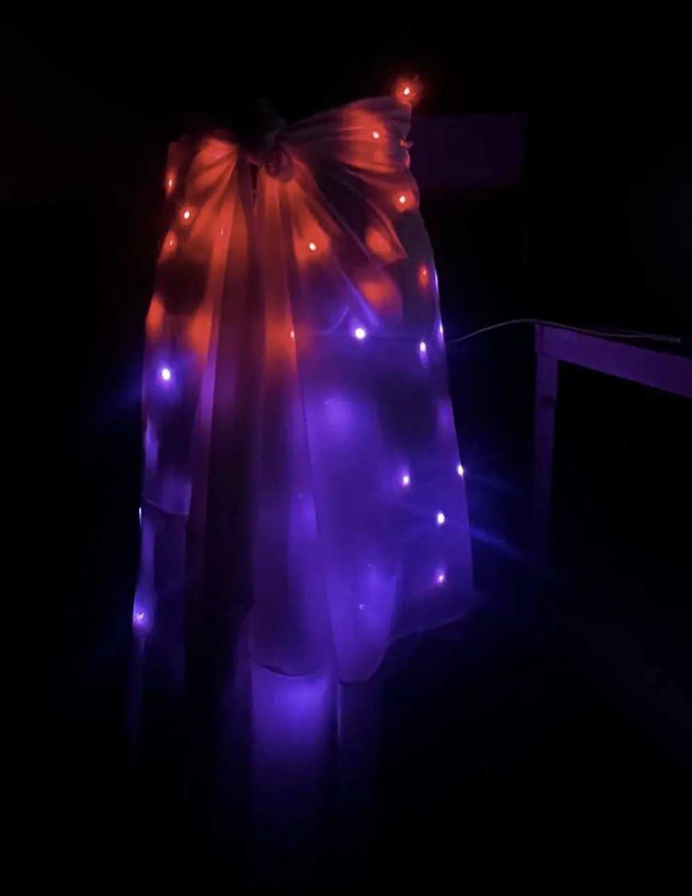

Designing Embodied Wearable Technology to Enhance Kinesthetic Expression for Dance Performance
Researching and constructing two wearable costumes that integrate Pixelblaze microcontrollers, pixel-mapped LED arrays, and touch sensors
Designer and Researcher

LED Proof of Concept #1

LED Proof of Concept #2

Touch Sensor Proof of Concept

Initial Costume Design Drawing Sketch

Fabric Light Test

Physical Cosutme Design Sketch

Sewing Research

Custom JavaScript Pixelblaze Interface

LED Skirt Prototype Red-Green-Red

LED Skirt Prototype Red-Blue

Movement Test Dancer #1

Movement Test Dancer #2
I am researching and constructing two wearable costumes that integrate Pixelblaze microcontrollers, pixel-mapped LED arrays, and touch sensors within custom textile structures for my senior honors thesis project. My goal is to develop a light-based system of responsiveness that maps gesture, rhythm, spatial relationships, and physical contact across different regions of the body in real time. I am working toward a design where shifts in movement—expansion, contraction, sudden stillness, directional changes, or subtle emotional transitions—become visually legible through patterned light.
This project draws on my background in theater design, digital media integration, and performance-driven research. I am approaching the build as an iterative design process: running material tests for brightness and diffusion, constructing partial prototypes such as illuminated skirts, and refining each version through rehearsal-based testing of comfort, fit, and expressivity. Performer feedback directly informs decisions about LED placement, sensor configuration, textile choice, and how the programming distributes light across the torso, arms, and legs. My fabrication and testing take place across the Costume Shop, Lighting Lab, Projection Lab, and Ballet Studio Theater, with ongoing guidance from my faculty advisor and designers working in lighting and costume technology.
Conceptually, this work is grounded in the belief that technology can enrich the sense of presence between performers and audiences. Inspirations like the LilyPad Arduino and Autodesk's Tactum encouraged me to treat wearables as storytelling instruments that sense and communicate, rather than as static accessories. I am focusing on how programmed light can mirror internal dynamics so that choreography becomes both physically and visually embodied.
My methods combine material exploration, textile construction, sensor integration, and real-time LED programming. I am collecting data from both the light patterns themselves—timing, color behavior, regional mapping—and from performer impressions of mobility, comfort, and expressive accuracy. Two full rehearsal cycles will allow me to assess how well the costumes communicate emotional content through movement and how the touch- and proximity-based responses support the dancers' physical choices.
The project will culminate in a live duet performance in March 2026 at the Ballet Studio Theater, where I will run the live programming and gather audience feedback on perception, expressivity, and engagement. After the showing, I will assemble complete documentation of my process, including sketches, schematics, photographs, rehearsal notes, sensor layouts, programming scripts, and reflective analysis for my final report.
This project draws on my background in theater design, digital media integration, and performance-driven research. I am approaching the build as an iterative design process: running material tests for brightness and diffusion, constructing partial prototypes such as illuminated skirts, and refining each version through rehearsal-based testing of comfort, fit, and expressivity. Performer feedback directly informs decisions about LED placement, sensor configuration, textile choice, and how the programming distributes light across the torso, arms, and legs. My fabrication and testing take place across the Costume Shop, Lighting Lab, Projection Lab, and Ballet Studio Theater, with ongoing guidance from my faculty advisor and designers working in lighting and costume technology.
Conceptually, this work is grounded in the belief that technology can enrich the sense of presence between performers and audiences. Inspirations like the LilyPad Arduino and Autodesk's Tactum encouraged me to treat wearables as storytelling instruments that sense and communicate, rather than as static accessories. I am focusing on how programmed light can mirror internal dynamics so that choreography becomes both physically and visually embodied.
My methods combine material exploration, textile construction, sensor integration, and real-time LED programming. I am collecting data from both the light patterns themselves—timing, color behavior, regional mapping—and from performer impressions of mobility, comfort, and expressive accuracy. Two full rehearsal cycles will allow me to assess how well the costumes communicate emotional content through movement and how the touch- and proximity-based responses support the dancers' physical choices.
The project will culminate in a live duet performance in March 2026 at the Ballet Studio Theater, where I will run the live programming and gather audience feedback on perception, expressivity, and engagement. After the showing, I will assemble complete documentation of my process, including sketches, schematics, photographs, rehearsal notes, sensor layouts, programming scripts, and reflective analysis for my final report.
Project Credits
- Design & Research
- Siddharth Chattoraj
- Faculty Advisor
- Greg Mitchell